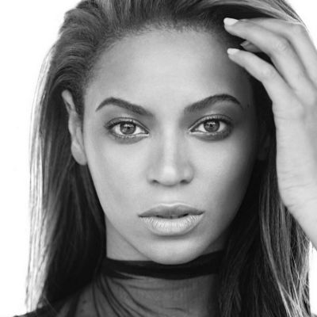

BEYONCÉ
Artist & Entrepreneur
beygood@beyonce.com
www.beyonce.com

"We need to reshape our own perception of how we view ourselves.
We have to step up as women and take the lead."
Solo Albums
Beyoncé
- The album "Beuoncé" made me the 1st woman in the chart's history
to have her 1st five studio albums debut at number 1
4
- The album sold 310.000 copies in its 1st week and debuted atop
the Billboard 200 chart, giving me the 4th consecutive number-one
album in the US
I am... Sasha Fierce
- "Halo" was my longest-running Hot 100 single which is how I
attained more top-ten singles on the list than any other woman
during the 2000s
B'Day
- The single "Irreplaceable" was a commercial success worldwide,
reaching number 1 in Australia, Hungary, Ireland, New Zealand and
the US
Dangerously in Love
- The album sold 317.000 copies in its first week, debuted atop
the Billboard 200
- Its lead single "Crazy in Love" became my 1st number-one
single as a solo artist in the US
Lead Vocalist
Destiny's Child
- "Say My Name" won the Best R&B Preformance by a Duo or Group
with Vocals and the Best R&B Song at the 43rd Annual Grammy
Awards
- "The Writing's on the Wall" album sold more than 8M copies worldwide
- Our 3rd album "Survivor" debuted at number 1 on the U.S. Billboard 200,
with first-week sales of 663.000 copies sold
- Writing award from the New York Association of Black Journalists for my
cover story "Eat, Play, Love"
- 24 MTV Video Music Awards
- 21 BET Awards
- 20 Grammys (most nominated woman in Grammy history)
- 7 American Music Awards
- 6 Billboard Music Awards
- A total of 254 awards won
Home page